Python Sudeste 2019
Liberdades na Programação Criativa
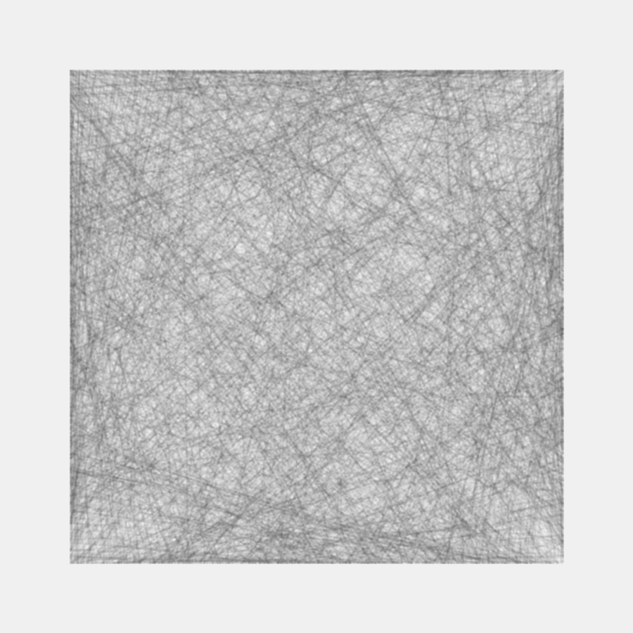Bernardo Fontes
Vitória / ES
27 de Abril de 2019
Olar!

berinfontes.com/talks
Outra 33ª Bienal de São Paulo
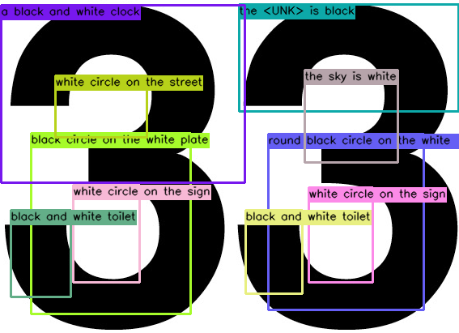Percursos verborrágicos
@outra33bienal
Código e Arte?

Quero! Mas como?
Uma lembrança...
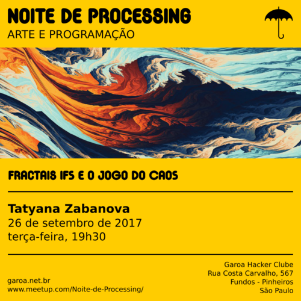SESC SP <3
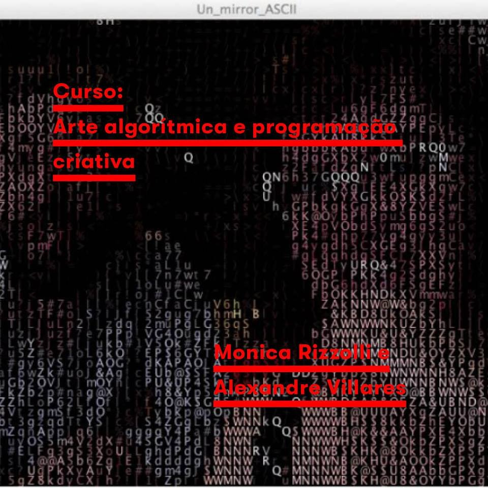Georg Ness - Generative Computergrafik
1965

Frieder Nake
1965

Vera Molnár
1968 / 1969

Lillian Schwartz
1970

@manoloidee

@inconvergent
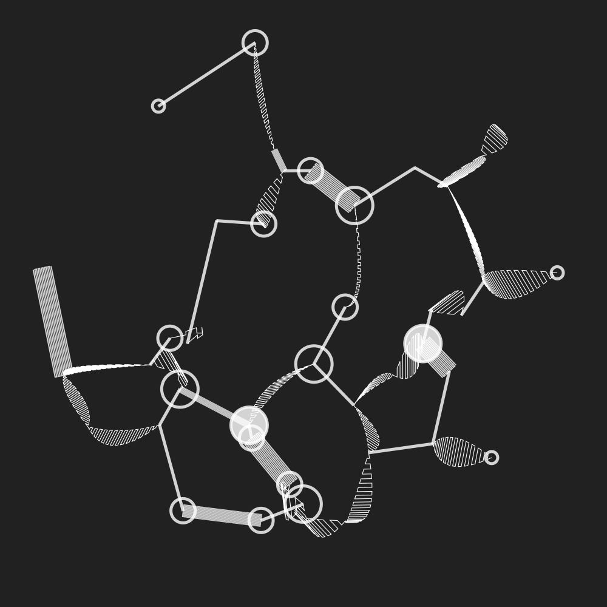Saskia Freeke
@sasj_nl
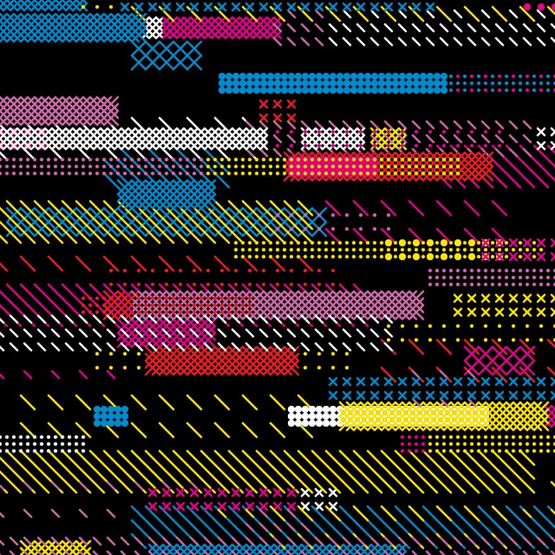Frederik Vanhoutte
@wblut

Código, arte e Python!?!?!?
Junho 2018 - Primeiro sketch

Código fonte em Java
PythonBrasil[14] - Projeto
2019 - Daily Sketches
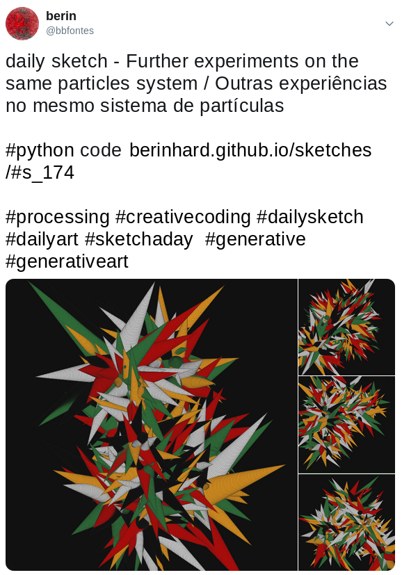Compreendi algumas liberdades
no Ato de Programar
Código Efêmero

Anti-patterns se tornam úteis
I <3 globals
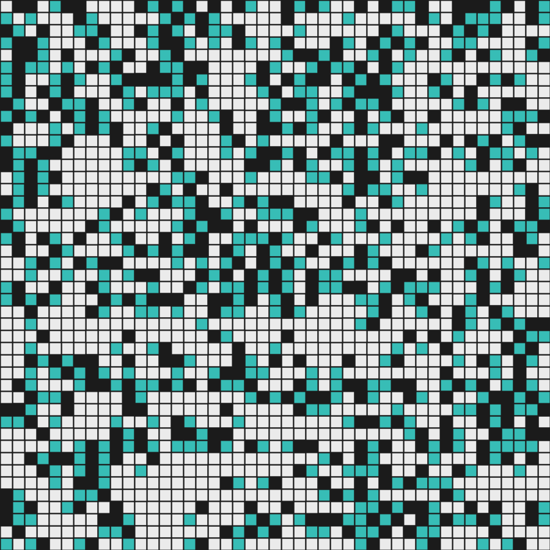Não Existem Bugs
ou Errar por Direito

Adeus Frameworks!

Olá Ciência da Computação!
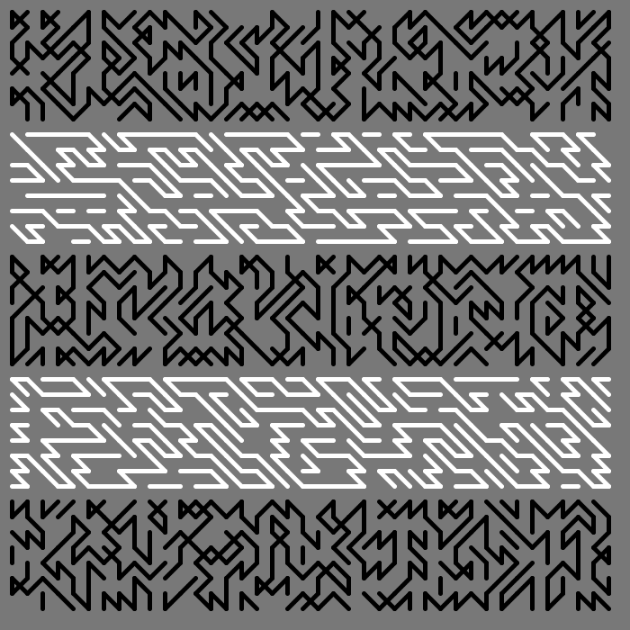Busca em profundidade* - Código fonte
* usando backtrackingOlá Python!
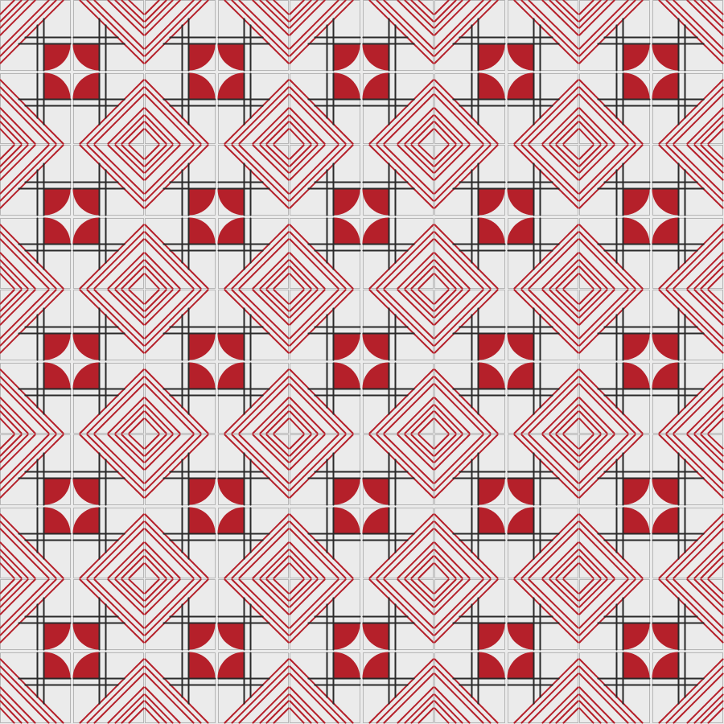Simetria com Context Managers - Código fonte
Sem "Usuários"

Diversidade Temática
ou Quantas são as maneiras desenhar um polígono?
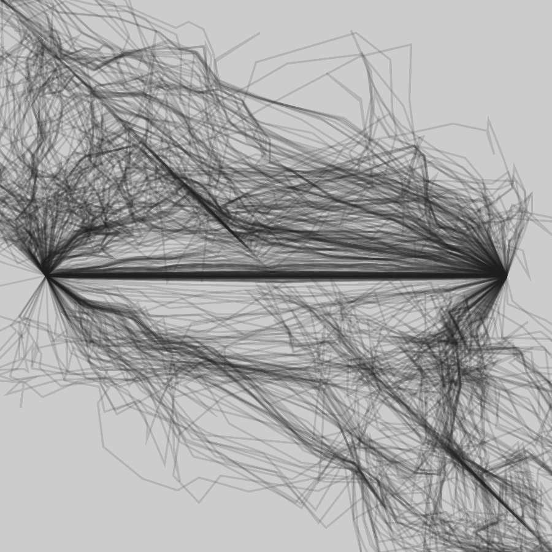Software Livre pela Estética
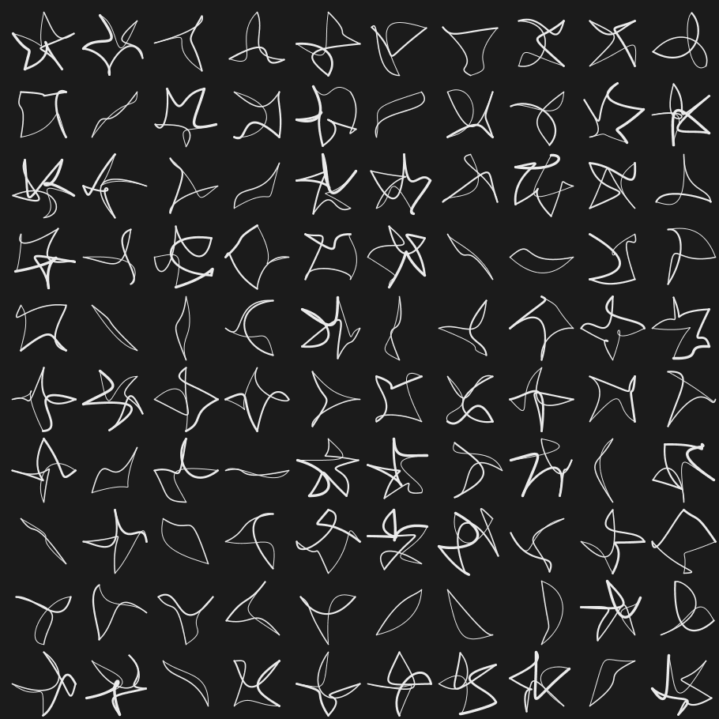É para Todas as Pessoas
No Garoa (São Paulo) toda última terça-feira do mês
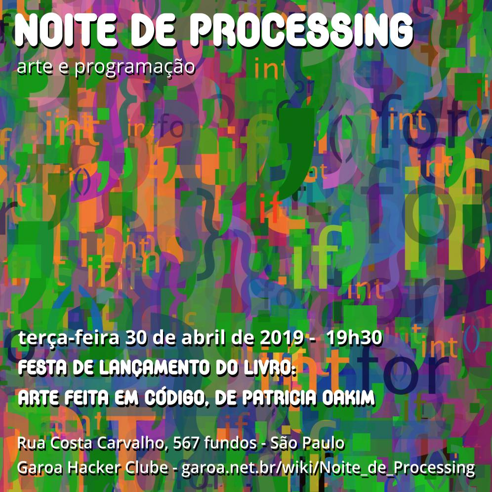Em Recife toda última quarta-feira do mês
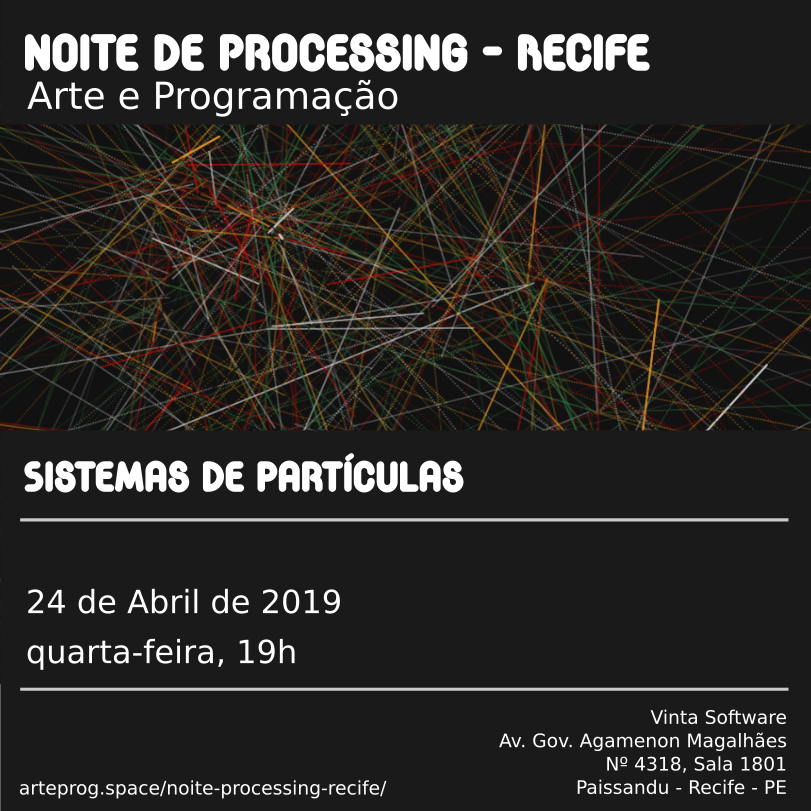